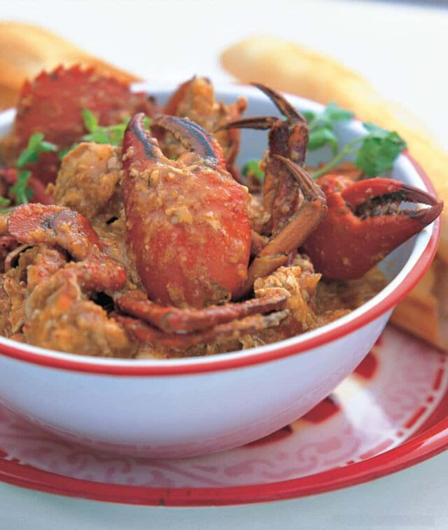

Singapore Chili Crab

Singapore Chili Crab is one of the world's most popular dishes. Succulent crab simmered in a thick, sweet, savory
and spicy sauce.
- Prep time: 40 mins
- Cook time: 20 mins
- Course: Appetizer, Main Course
- Cuisine: Asian
- Servings: 4
- Calories: 437 kcal
Ingredients
For the Crab
- 3-4 pounds live crab
- 2 tablespoons oil
- 6 shallots minced
- 6 large cloves garlic minced
- 2 tablespoons finely minced ginger
- 3 red bird's eye chilies minced
- 3 1/2 cups 875 ml chicken stock
- 4 tablespoons hot bean paste
- 1/4 cup 60 ml bottled chili sauce
- 1/2 cup 125ml canned tomato sauce
- 1 tablespoon sugar
- 2 tablespoons Chinese rice wine
- 2 teaspoons salt
- 1 teaspoon white pepper
- 2 tablespoons cornstarch mixed with 3 tablespoons water
- 2 eggs lightly beaten
For the Chili Ginger Sauce
- 6 red finger-length chilies minced
- 5 cloves garlic minced
- 2 tablespoons finely minced ginger
- 2 teaspoons sugar
- 1/2 teaspoon salt
- 1 teaspoon rice vinegar
- 1 tablespoon water
Instructions
- Place the live crabs in the freezer for 15 minutes to immobilize them. Cut in half, lengthwise with a
cleaver or large chef's knife and remove the back and discard the spongy grey matter. Take off the claws and
crack in several places with a cleaver. Cut each body half into two to three pieces, leaving the legs
attached.
- Make the Chili-Ginger Sauce by whisking all the ingredients in a bowl. Set aside.
- Heat the oil in a wok over medium-low heat and add the shallots, garlic, ginger and chilies. Stir-fry until
fragrant, about 3 minutes, then add the Chili-Ginger Sauce, chicken stock, hot bean paste, chili sauce,
tomato sauce, sugar, rice wine, salt and pepper. Bring to a boil, then lower the heat and simmer for 2
minutes.
- Add the crab pieces and simmer, uncovered, turning several times, until the shells are bright red and the
crabs are cooked, about 10 minutes.
- Add the cornstarch/water mixture and stir until the sauce thickens, about 30 seconds. Add the eggs and stir
until set, then transfer the chili crab to a serving dish and serve with crusty bread.
Recipe taken from: steamykitchen.com
Go back to homepage